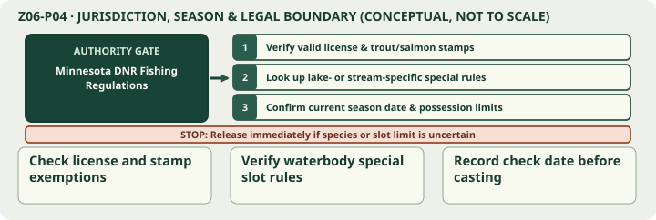

Z06-P04 · Hunting and fishing · New manuscript
Minnesota Fishing Licenses, Seasons and Special Waterbody Rules
Confirm current Minnesota DNR angling licenses, seasonal openers, possession limits, and lake-specific special regulations before fishing.
When it applies · Inland lakes, rivers, trout streams, and border waters across Minnesota.
Equipment · Valid Minnesota angling license/stamps, current MN DNR Fishing Regulations handbook, measuring board.

Actions
- Obtain the required Minnesota fishing license and any trout/salmon stamp before fishing unless explicitly covered by a current statutory exemption.[H01]
- Look up the exact waterbody in the current Minnesota DNR Fishing Regulations because special length slots, catch-and-release mandates, and seasonal closures override statewide defaults.[H01]
- Carry an accurate rigid measuring rule to verify minimum or protected length slots before keeping any fish.[H01, H06]
Failure recognition · Relying on outdated regulation booklets or statewide general limits on a special-regulation lake causes accidental illegal possession.[H01]
Verify · Current year DNR handbook, waterbody exceptions, license validity, and measuring tool are confirmed prior to fishing.[H01]
Stop or change course · Stop keeping any fish whose species, length slot, or current season status cannot be verified immediately on the water.[H01, H06]
Evidence and editorial notes
- H01 · Minnesota DNR · Minnesota Fishing Regulations (Current web edition)
- Section: Licensing, seasons, limits, and waterbody-specific rules · Conditions: Minnesota angling across inland, border, and designated waters
Support: Anglers must hold a valid license unless explicitly exempt and verify current season dates, possession limits, size slots, and special waterbody rules before fishing.
Limitations: Regulations change annually and differ on border waters, trout streams, and tribal/ceded territories; no emergency creates an automatic legal exemption. · Conflicting evidence: None noted.
Editorial note: Establishes Z06 fishing authority gate. · Specialist reviewer: Minnesota DNR fisheries and legal reviewer
Primary source · checked 2026-11-25 - H06 · Minnesota DNR · Fishes of Minnesota Species Reference (Current web edition)
- Section: Positive fish species identification before keeping catch · Conditions: Identifying regional game, rough, and protected fish species
Support: Accurate species identification using fin counts, mouth structure, markings, and body profile is mandatory to comply with limits and protected-species rules.
Limitations: Juveniles and hybrids can resemble restricted species; release immediately when positive identification is uncertain. · Conflicting evidence: None noted.
Editorial note: Connects Z06 identification to lawful harvest. · Specialist reviewer: Fisheries biologist
Primary source · checked 2026-11-25
Source lineage · New manuscript (Z06 P17 Minnesota regulations) · Classification · New manuscript.